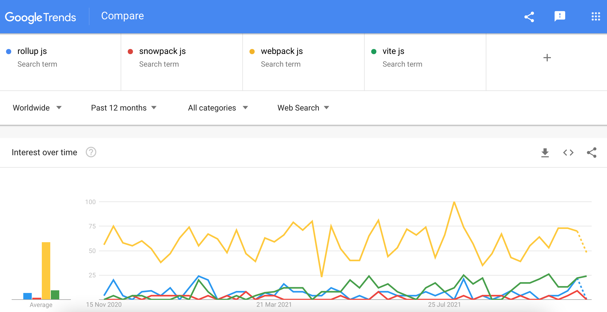

React מתקדמת
לו”ז
| נושא | שעה |
|---|---|
| JSX | 9:15-9:30 |
| Modules | 9:30-10:00 |
| Bundler | 10:10-10:40 |
| Code splitting | 10:50-11:20 |
| תרגיל 1 | 10:30-11:00 |
| Context | 11:10-11:30 |
לו”ז 2
| נושא | שעה |
|---|---|
| תרגיל 2 | 11:40-12:00 |
| הפסקת צהריים | 12:00-13:00 |
| Error boundaries | 13:00-13:20 |
| תרגיל 3 | 13:20-13:30 |

למה React?
- ב-React רק מתעסקים ב-render
- אין שום תלות בשיטת בקמות קבצים/סטנדרט תיקיות או metadata
- כיוון אחד למידע, למעלה כלפי מטה דרך props, state או context
- JSX
JSX

למה JSX?
- יש חיבור בין לוגיקה לבין UI, אם לא היה, הלוגיקה לא היה עושה כלום
- ב-JSX אפשר להשתמש בכל היכולות של JS ב-UI
- אין צורך ללמוד שפת templating, הכל JS + קומפוננטות/אלמנטים
Modules, bundlers & code splitting
- מה הם modules?
- מה זה Bundler?
- מה זה Webpack?
- איך יוצרים יותר מ-bundle אחד
JS Modules
- שפת JavaScript היא סטנדרט ולא מימוש
- פעם כל JS היה יכול לגשת לכל דבר ולא היה namespacing
- נוצר כמה שיטות שונות להפריד קוד לקבצים שונות ב-namespace שונה
CommonJS Modules
- אפליקציית Node.JS פותח עם תמיכה ב-modules שנקראים CommonJS, לדוגמא:
ES Modules
- כאשר ES6 יצא ב2015, נוצר ES modules, לדוגמא:
- בהגדרה, ES modules רצים ב-strict mode
- ב-Node.JS מוסיפים
"type": "module"ל-package.jsonכדי להשתמש בזה
Bundler
- Bundler הוא רכיב שממרג’ את כל הקוד שלך מכל המודולים אל תוך קובץ אחד
- למה צריך אותו?
- כדי להריץ מודלים בדפדפן
- Angular ו-CRA משתמשים ב-Webpack
- איך דואגים לכך שלא צריך להוריד את כל האפליקציה כדי להריץ?
- משתמשים ב-code splitting

Hot Module Replacement
- רק הקומפוננטות שהושתנו הוחלפו
- עדכונים לקוד שנוצג בדפדפן בלי לרסט את ה-state
- משפר זמן פיתוח

Webpack
- ה-bundler של Angular ו-create-react-app
- יוצר קובץ אחד minified עבור דפדפנים
- מיושן אבל מאוד פופולרי

Vite
- אחד מתוך הרבה כלים חדשים אבל
- פיתוח עם ES modules ללא bundling ומקמפל NPM מודלים ל-ES modules ע”י כלי בשם
esbuild - בניית קוד מאוד מהיר
- גודל פרויקט לא משפיע על זמן בנייה לפיתוח
- יותר מתאים ל-caching
- בונה קוד ל-production אל תוך bundle אחד ע”י rollup כך שיש רק bundle אחד לכל entrypoint
Code splitting
- כדי לפצל את האפליקציה לכמה bundleים אפשר להשתמש ב-code splitting
- אפשר להשתמש בפיצ’ור של JS עבור splitting שנקרא
import()דינמי - הוא בעצם מתנהג כמו
importרגיל אבל מחזיר את ה-importב-Promise
import רגיל:
import דינמי:
React lazy
- אין דרך לבצע
awaitבקומפוננטה ב-React - נדרש שיטה אחרת לעשות לייבא קומפוננטה
- אפשר להשתמש ב-
lazy()של React כדי להשתמש בקומפוננטה שנטענת דרך import דינמי - שימו לב כי הקובץ חייב לחשוף קומפוננטה ב-default export
- אבל מה מוצג עד שזה נטען?

React Suspense
- קומפוננטה שמרונדרת כאשר
lazy()מחכה לתגובה
תרגיל 1
- התקינו Vite ע”י
- תצרו component בשם Calculator:
- היא מקבלת שני קלטים ואופרטור אחד
- היא צריכה לחשב ולהציג את התוצאה
- תצרו כפתור שטוען את מחשבון דינמית אחרי delay של שנייה ובעת טעינה להציג הודעה
- שימו לב: קובץ של ה-Calculator רק נטען אחרי לחצית הכפתור ושנייה ונטען בנפרד לשאר האתר

Context
- עם
Contextתוכל להעביר props לקומפוננטות שהן עמוקות בעץ בלי להעביר דרך קומפוננטות באמצע 


const ThemeContext = React.createContext("light")
const App = () => (
<ThemeContext.Provider value="dark">
<Toolbar />
</ThemeContext.Provider>
)
const Toolbar = () => (
<div>
<ThemedButton />
<button>Another button</button>
</div>
)
const ThemedButton = () => {
const context = useContext(ThemeContext)
return <Button theme={context} />
}תרגיל 2
- תוסיפו Context שמנהלת theme של האפליקציה
- תוסיפו dropdown שייתן לך לשנות בין light ו-dark
- תשנו את צבע הרקע ל-black אם ה-theme הוא dark ו-white אם ה-theme הוא light וצבע הטקסט לצבע ההפוך
- תעבירו את ה-context לקומפוננטת המחשבון ותבצעו את טקסט בה blue אם ה-theme הוא light ו-yellow אם ה-theme הוא dark
- שימו לב: חשוב לדאוג לזה שמחשבון שלך לא ייובא מחדש ולא תהיה שהייה על כל שינוי ב-theme
Error Boundaries
- מאפשרות תפיסת שגיאות בקומפוננטות בעץ הילדים, ניטורם והצגת fallback
- הן לא תופסות event handlers, קוד אסנכרוני, רנדור בצד שרת ושגיאות בboundary עצמו
דוגמאת error boundary (מחלקה)
class ErrorBoundary extends React.Component {
constructor(props) {
super(props)
this.state = { hasError: false }
}
static getDerivedStateFromError(error) {
// Update state so the next render will show the fallback UI.
return { hasError: true }
}
componentDidCatch(error, errorInfo) {
// You can also log the error to an error reporting service
logErrorToMyService(error, errorInfo)
}
render() {
if (this.state.hasError) {
// You can render any custom fallback UI
return <h1>Something went wrong.</h1>
}
return this.props.children
}
}דוגמאת react-error-boundary
import { ErrorBoundary } from "react-error-boundary"
function ErrorFallback({ error, resetErrorBoundary }) {
return (
<div role="alert">
<p>Something went wrong:</p>
<pre>{error.message}</pre>
<button onClick={resetErrorBoundary}>Retry</button>
</div>
)
}
const ui = (
<ErrorBoundary
FallbackComponent={ErrorFallback}
onReset={() => {
// reset the state of your app so the error doesn't happen again
}}
>
<ComponentThatMayError />
</ErrorBoundary>
)תרגיל 3
- התקינו
react-error-boundary(npm i react-error-boundary) - תצרו error boundary עם כפתור reset על המחשבון שלך ותדאג לכך שכל חילוק באפס זורק שגיאה
העמקה ב-hooks
- מי שקרא על React כנראה מכיר כי יש class-based ו-functional קומפוננטות
- דרך hooks אפשר לעשות כל מה שאפשר ב-class-based קומפוננטות ב-functional
- פונקציות יותר קריאות מאשר מחלקות, יש להם קלטות ופלטות מאוד ברורות ואין שדות/שיטות
- ה-hooks הם מאפשרים שיתוף לוגיקה ושימוש חוזר בקוד
- ה-hooks הם עוטפים פועלות שהן לא pure במסגרת ברורה כולל setup ו-teardown
useEffect
- מאפשר ביצוע פועלה לאחר רנדור של הקומפוננטה, כלומר side-effects
- יש שני יכולות נוספות: clean-up ורשימת פרמטרים רק עבור שינוי בהם לבצע את ה-effect
- אם עושים שינוי ב-effect שנוגע ב-DOM עדיף להשתמש ב-
useLayoutEffectשזה ל-useEffectחוץ מזה שזה נקרא לפני צביע השינוי ב-DOM לעומת אחרי ולכן מונע קפיצות
דוגמאת useEffect
דוגמאת useEffect 2
useEffect(() => {
const handleStatusChange = (status) => {
setIsOnline(status.isOnline)
}
subscribeToFriendStatus(
props.friend.id,
handleStatusChange
)
return () => {
unsubscribeFromFriendStatus(
props.friend.id,
handleStatusChange
)
}
}, [props.friend.id]) // Only re-subscribe if props.friend.id changesuseCallback
- מאפשר יצירת פונקציות שהן רק תלויות בפרמטרים במערך
- שימושי כדי למנוע יצירת פונקציות מחדש על כל רנדר כאשר הם לא תלויים בפרמטרים אלו
דוגמאת useCallback
import { useState, useCallback } from "react"
const App = () => {
const [count, setCount] = useState(0)
const [isActive, setActive] = useState(false)
const increment = useCallback(
() => setCount(count + 1),
[count]
)
const toggleCounterVisibility = useCallback(
() => setActive(!isActive),
[isActive]
)
return (
<div className="App">
{isActive && (
<div>
<h1>{count}</h1>
<button onClick={increment}>Increment</button>
</div>
)}
<button onClick={toggleCounterVisibility}>
{isActive ? "Hide Counter" : "Show Counter"}
</button>
</div>
)
}useRef
- מאשפרת יצירת reference שהוא mutable וקריא בשדה
.current - הערך שהועבר אליו הוא הערך ההתחלתי
- ביחד עם הישות
refעל elements ב-HTML מאפשר גישה ישירה ל-element ב-DOM
דוגמאת useRef
דוגמאת useRef 2
const Timer = () => {
const intervalRef = useRef()
useEffect(() => {
const id = setInterval(() => {
console.log("Hello future!")
}, 10_000)
intervalRef.current = id
return () => {
clearInterval(intervalRef.current)
}
})
const handleCancelClick = () => {
clearInterval(intervalRef.current)
}
return (
<button onClick={handleCancelClick}>
Stop the future!
</button>
)
}תרגיל 4
- תוסיפו שינוי לכותרת הדף עם התוצאה של החישוב
- תוסיפו תוצאה האחרונה (זה יידרוש שימוש יצירתי ב-useEffect ו-useRef יחד)
- לחיצה על תוצאה האחרונה אמורה להחזיר את הערכים הקודמים שהיו (אל תשכחו למנוע רנדורים מיותר)
כלי פיתוח - React DevTools
Forwarding refs
- ברירת המחדל של React היא שאין
refעל קומפוננטות - אפשר להעביר את ה-
refל-elementים ב-DOM - זה שימושי בקומפוננטות שהן “בסיסיות” כגון כפתור/Input
דוגמאת forwarding ref
useImperativeHandle
- דרך
useImperativeHandleאפשר לבחור איזה חלקי הrefלחשוף החוצה ולשנות התנגותה - הכי קל לראות את זה בדוגמא
דוגמאת useImperativeHandle
import {
useRef,
useImperativeHandle,
forwardRef,
} from "react"
export const ImperativeChildExampleComponent = (
props,
ref
) => {
// we need to create a new ref for the input to be able to focus on the element
const inputRef = useRef(null)
useImperativeHandle(ref, () => ({
focus: () => {
sendEvent()
// focus on the input after we send the event
inputRef.current.focus()
},
}))
return <input {...props} ref={inputRef} />
}
const ImperativeChildExample = forwardRef(
ImperativeChildExampleComponent
)
export default function ImperativeParentExample() {
const ref = useRef(null)
return (
<div>
<ImperativeChildExample ref={ref} />
<button onClick={() => ref?.current?.focus()}>
Focus!
</button>
</div>
)
}controlled v. uncontrolled קומפוננטות
- יש שני שיטות לעבוד מול inputים, controlled ו-uncontrolled
- ברירת המחדל אמור להיות controlled, כאשר כל שינוי נשמר ל-state וערך ה-input מוגדר ע”י state
uncontrolled קומפוננטות
- קוראים ערכי ה-input בזמן הנדרש מה-DOM ע”י
ref - אפשר להשתמש ב-uncontrolled קומפוננטות ליצור פונקציונליות יותר מהיר ואז להשתמש ב-
onSubmitלמשל אבל מומלץ לא להשתמש ב-uncontrolled קומפוננטות בכללי - כאשר משתמשים ב-uncontrolled קומפוננטות אפשר להשתמש ב-
defaultValueכדי להגדיר ערך התחלתי
דוגמאת uncontrolled קומפוננטות
const NameForm = () => {
const input = useRef()
const handleSubmit = (event) => {
alert("A name was submitted: " + input.current.value)
event.preventDefault()
}
return (
<form onSubmit={handleSubmit}>
<label>
Name:
<input type="text" ref={input} />
</label>
<input type="submit" value="Submit" />
</form>
)
}ביצועים
- אפשר למדוד ולשפר ביצועים של אפליקציות React ע”י שיטות מוכרות
- חשוב להגדיר
keyעבור כל קומפוננטה מערך כדי ש-React יכול לעקוב אחרי שינויים לכל קומפוננטה במקום לרנדר את הרשימה מחדש - כדאי לא לרנדר קומפוננטות כבדות במקום להגדיר אותם כ-
display: noneכדי להוריד עומס על ה-DOM
Profiler
- ל-React יש קומפוננטה בשם profiler
Profiler 2
- כאשר
onRenderנקרא עם: function onRenderCallback( id, // the "id" prop of the Profiler tree that has just committed phase, // either "mount" (if the tree just mounted) or "update" (if it re-rendered) actualDuration, // time spent rendering the committed update baseDuration, // estimated time to render the entire subtree without memoization startTime, // when React began rendering this update commitTime, // when React committed this update interactions // the Set of interactions belonging to this update ) { // Aggregate or log render timings... }
וירטואליזציה
- אפשר להשתמש בספריות כגון
react-virtualכדי ליצור אזורים וירטואלים בהם רק תוכן שמוצג למשתמש מרונדר ב-DOM ושאר התוכן רק הוחזק בזיכרון - שימוש בכלים אלו יכול לשפר ביצועים מהותית כאשר נדרש להציג רשימות גדולות/תכנים רבים
- אפשר לראות דוגמאות באתר